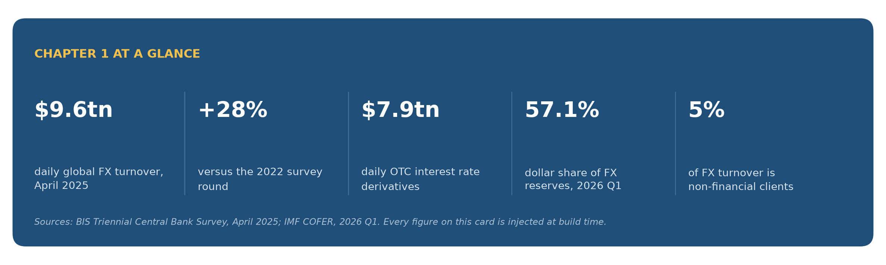
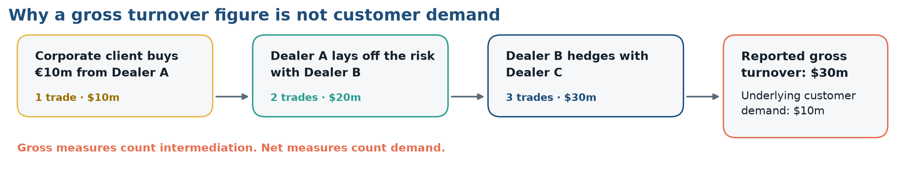
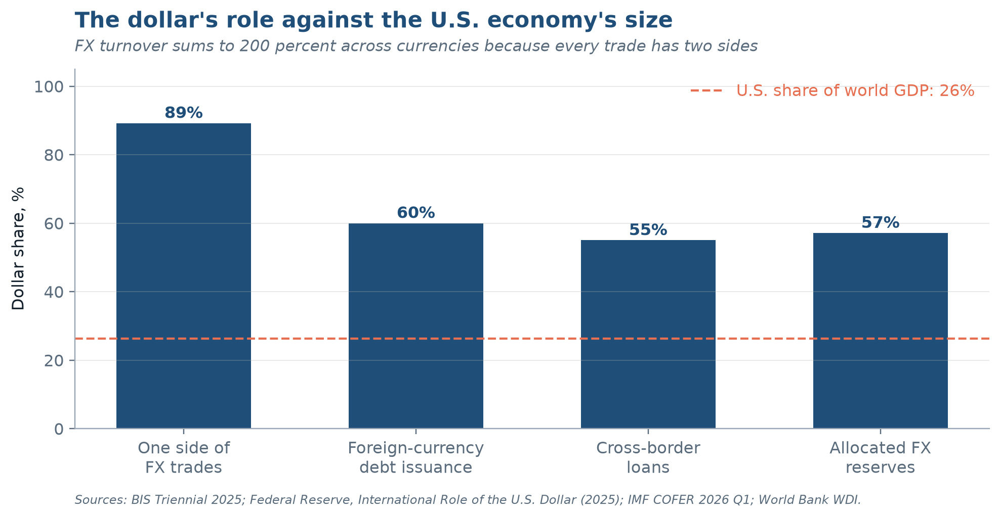
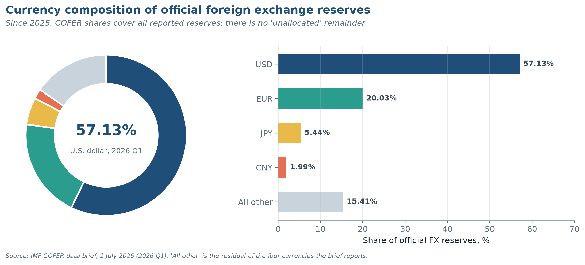
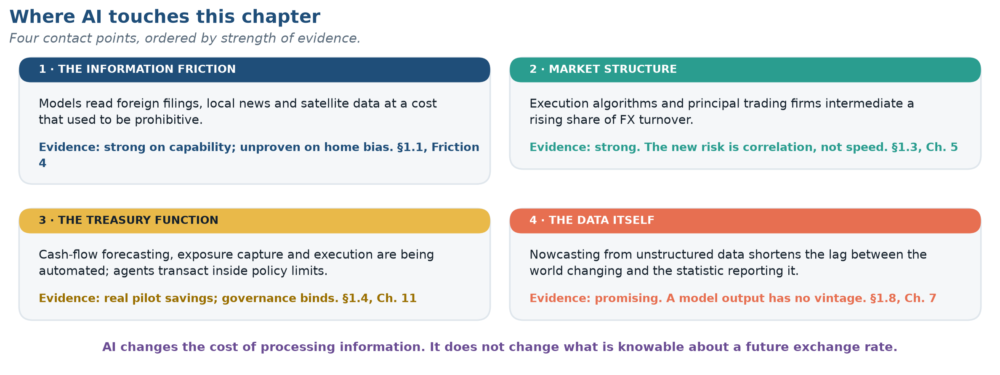

Show the code that produced this
ex.glance(); plt.show()
Data in this chapter were last refreshed on 11 November 2026. Every chart names its source and retrieval date beneath it.
ex.glance(); plt.show()
On a single ordinary business day, the world’s foreign exchange market turns over about $9.6 trillion — a figure that exceeds the annual economic output of every country on earth except the United States and China, and it happens daily. In April 2025 that number was 28 percent higher than three years earlier, measured in a month when tariff announcements sent currencies lurching and hedging demand surging. Alongside it, over-the-counter interest rate derivatives traded $7.9 trillion per day, up 59 percent over the same three years.
These numbers come from the Bank for International Settlements’ Triennial Central Bank Survey, a census conducted every three years across 52 jurisdictions and more than 1,100 banks and other dealers.
Two facts to keep in mind: first, almost none of that turnover is paying for trade in goods. Global merchandise exports run to about $26.3 trillion per year; the FX market clears that much in about 2.7 trading days. Second, a firm with no foreign subsidiary, no foreign sales, and no foreign debt is still exposed to this market because its competitors, its suppliers, and its customers are.
After completing this chapter you should be able to:
Domestic corporate finance gives you a powerful toolkit: discounted cash flow, the cost of capital, capital structure, risk management. None of it is wrong when you cross a border. All of it becomes harder, for four reasons that structure this entire book. Exhibit 1.1 is the map; the four sections that follow are the territory.
ex.ex0102(); plt.show()
A domestic firm’s cash flows are denominated in one unit of account. A multinational’s are not, and the rates of exchange between those units move continuously, unpredictably, and sometimes violently. This creates a risk with no domestic counterpart: the value of a perfectly certain future cash flow becomes uncertain simply because it will arrive in a foreign currency.
s, prov = series("broad_dollar")
ill = prov.tier == "illustrative"
fig, ax = plt.subplots(figsize=(10.6, 4.4))
ax.plot(s.index, s.values, color=NAVY, lw=1.7)
ax.set_ylabel("Index, January 2006 = 100")
if not ill:
peak = s.cummax(); dd = (s / peak - 1).min() * 100
trough = s.cummin(); ru = (s / trough - 1).max() * 100
ax.annotate(f"{s.iloc[-1]:.1f}", (s.index[-1], s.iloc[-1]), xytext=(6, 0),
textcoords="offset points", color=NAVY, fontweight="bold", va="center")
ax.text(0.01, 0.95, f"Largest run-up {ru:.0f}% · largest decline {abs(dd):.0f}%",
transform=ax.transAxes, color=RUST, fontsize=9.5, fontweight="bold", va="top")
finish(fig, "ex0103", "Nominal broad U.S. dollar index", "Trade-weighted against major and emerging-market partners; monthly average",
source=f"Source: {prov}. FRED series DTWEXBGS.", illustrative=ill)
plt.show()
Notice the amplitude in that series when you render it. For a firm whose operating margin is 8 percent, a currency move of 20 percent is not a rounding error — it is the difference between a profitable foreign subsidiary and a write-off.
Every cross-border transaction crosses a jurisdictional boundary, and jurisdictions have governments. Governments tax, regulate, expropriate, impose capital controls, block repatriation, rewrite tariff schedules, and occasionally default on their own obligations. Collectively these are country risk or political risk, and they have no clean analogue in domestic finance because there is no higher authority to appeal to. A contract between two U.S. firms is enforceable in U.S. courts. A contract between a U.S. firm and a sovereign state is enforceable only to the degree the state consents, or to the degree the firm can seize assets abroad — the subject of Chapter 18.
Accounting standards, bankruptcy codes, disclosure rules, tax treaties, creditor rights and governance norms all differ across countries, and the differences are not cosmetic: the same economic transaction can report different earnings under IFRS and U.S. GAAP (Chapter 13), confer different rights depending on governing law, and face radically different effective tax rates depending on structure (Chapter 19).
Investors know less about foreign firms than domestic ones, and the gap persists even when the raw disclosures are comparable. This friction explains the home bias puzzle — investors hold far more domestic equity than any standard portfolio model recommends — and it raises the cost of capital for firms raising money abroad (Chapters 14 and 15).
Every chapter that follows attacks one of these four frictions. When a topic feels unmoored, return to Exhibit 1.1 and ask which friction it addresses. The Top Ten at the front of the book compresses the whole field into ten propositions for exactly that purpose.
Scale matters for intuition, so let us establish benchmarks. The most common measure of real-economy integration is trade openness: exports plus imports as a share of GDP.
d, prov = series("trade_openness")
ill = prov.tier == "illustrative"
fig, ax = plt.subplots(figsize=(10.6, 4.2))
ax.plot(d["year"], d["value"], color=TEAL, lw=2)
ax.set_ylabel("Exports + imports, % of world GDP")
if not ill:
pk = d.loc[d["value"].idxmax()]; last = d.iloc[-1]
ax.annotate(f"Peak {pk.value:.0f}% ({pk.year:.0f})", (pk.year, pk.value), xytext=(-10, 10),
textcoords="offset points", ha="right", color=RUST, fontweight="bold")
ax.annotate(f"{last.value:.0f}% ({last.year:.0f})", (last.year, last.value), xytext=(6, -2),
textcoords="offset points", color=TEAL, fontweight="bold")
finish(fig, "ex0104", "World trade openness", "Exports plus imports of goods and services as a share of world GDP",
source=f"Source: {prov}. Indicator NE.TRD.GNFS.ZS, world aggregate."
+ (f" {HELD_BACK['NE.TRD.GNFS.ZS'][0]} value provisional; held back."
if "NE.TRD.GNFS.ZS" in HELD_BACK else ""), illustrative=ill)
plt.show()
The financial economy is a different order of magnitude — and the comparison is easier to feel on one axis than to read in a sentence.
rows = [("World merchandise exports, per year", float(val("wto_merch_exports")), SLATE),
("U.S. GDP, per year", float(val("us_gdp")), SLATE),
("World GDP, per year", float(val("world_gdp")), SLATE),
("FX turnover, per day", float(val("fx_turnover")), RUST),
("FX turnover, per year (252 days)", float(val("fx_annual")), NAVY)]
fig, ax = plt.subplots(figsize=(10.6, 3.9))
for i, (lab, v, c) in enumerate(rows[::-1]):
ax.barh(i, v, color=c, height=0.62)
ax.text(v * 1.12, i, f"${v:,.0f}tn" if v >= 20 else f"${v:,.1f}tn", va="center", color=c, fontweight="bold", fontsize=9.5)
ax.set_yticks(range(len(rows)), [r[0] for r in rows[::-1]])
ax.set_xscale("log"); ax.set_xlim(3, 12000); ax.grid(axis="y", visible=False)
from matplotlib.ticker import FixedLocator, FixedFormatter
ax.xaxis.set_major_locator(FixedLocator([10, 100, 1000, 10000]))
ax.xaxis.set_major_formatter(FixedFormatter(["$10tn", "$100tn", "$1,000tn", "$10,000tn"]))
ax.xaxis.set_minor_formatter(FixedFormatter([]))
ax.set_xlabel("U.S. dollars, trillions (logarithmic scale)")
finish(fig, "ex0105", "Orders of magnitude", "The financial economy against the real economy it prices",
source="Sources: BIS Triennial Survey, April 2025; WTO, 2025; World Bank WDI, 2024.")
plt.show()
Exhibit 1.5 plots the headline series from the BIS Triennial Survey, the only global census of FX activity.
s = FX_TURNOVER_ROUNDS
fig, ax = plt.subplots(figsize=(10.6, 4.2))
cols = [NAVY if y == s.index[-1] else "#9aa7b3" for y in s.index]
ax.bar([str(y) for y in s.index], s.values, color=cols, width=0.62)
for i, v in enumerate(s.values):
ax.text(i, v + 0.15, f"{v:.1f}", ha="center", fontsize=9.5, color=NAVY if i == len(s) - 1 else MUTED,
fontweight="bold" if i == len(s) - 1 else "normal")
ax.set_ylabel("USD trillion per day"); ax.grid(axis="x", visible=False)
ax.text(len(s) - 1, s.values[-1] + 0.95, f"+{val('fx_turnover_chg')}% on 2022", ha="center", color=RUST,
fontsize=9.5, fontweight="bold")
ax.set_ylim(0, s.max() * 1.22)
finish(fig, "ex0106", "Global foreign exchange turnover", "Daily average in April of each survey year, net-net basis",
source="Source: BIS Triennial Central Bank Survey; each round as published, latest April 2025.")
plt.show()
Two features deserve comment. First, the series grows faster than world trade or world GDP over the same period — financial activity has outpaced the real transactions it nominally serves. Second, it is not monotonic: turnover fell between 2013 and 2016, a reminder that the post-crisis regulatory tightening and the retreat of bank balance-sheet capacity had measurable effects on market size. Growth in this market is not a law of nature.
Put the two economies side by side and the asymmetry is stark.
fx, tr = float(val("fx_turnover")), float(val("wto_merch_exports"))
fig, ax = plt.subplots(figsize=(10.6, 2.9))
ax.barh([1, 0], [fx, tr], color=[NAVY, RUST], height=0.55)
ax.set_yticks([1, 0], ["Global FX turnover,\none trading day", "World merchandise exports,\none full year"])
for y, v in [(1, fx), (0, tr)]:
ax.text(v + 0.3, y, f"${v:.1f}tn", va="center", fontweight="bold")
ax.set_xlim(0, tr * 1.18); ax.set_xlabel("USD trillion"); ax.grid(axis="y", visible=False)
finish(fig, "ex0107", "One day of currency trading, one year of goods trade",
f"The FX market clears a year of world merchandise trade in about {val('days_to_clear_trade')} trading days",
source="Sources: BIS Triennial Central Bank Survey, April 2025; WTO Global Trade Outlook and Statistics, March 2026.")
plt.show()
The ratio is roughly 2.7 trading days of FX turnover per year of world goods trade. If currency trading existed only to settle trade invoices, the market would be about one-hundredth of its observed size. It is not: the overwhelming majority of turnover is dealer-to-dealer position management, hedging of financial rather than commercial exposures, and speculation. We decompose it properly in Chapter 5.
The same survey measures a second market of comparable size.
f, r = FX_TURNOVER_ROUNDS.loc[2016:], IRD_TURNOVER_ROUNDS
x = np.arange(len(r)); w = 0.36
fig, ax = plt.subplots(figsize=(10.6, 4.0))
ax.bar(x - w / 2, f.values, w, color=NAVY, label="Foreign exchange")
ax.bar(x + w / 2, r.values, w, color=RUST, label="OTC interest rate derivatives")
for i in range(len(r)):
ax.text(i - w / 2, f.values[i] + 0.15, f"{f.values[i]:.1f}", ha="center", fontsize=9, color=NAVY)
ax.text(i + w / 2, r.values[i] + 0.15, f"{r.values[i]:.1f}", ha="center", fontsize=9, color=RUST)
ax.set_xticks(x, [str(y) for y in r.index]); ax.set_ylabel("USD trillion per day")
ax.set_ylim(0, f.max() * 1.18); ax.grid(axis="x", visible=False); ax.legend(loc="upper left")
finish(fig, "ex0108", "Two markets, one triennial census", "Average daily OTC turnover in April of each survey year",
source="Source: BIS Triennial Central Bank Survey; interest rate derivatives for 2019 and 2022 as compared in the 2025 release.")
plt.show()
ex.ex0109(); plt.show()
Six groups transact, and each is pursuing something different. Knowing whose objective function sits on the other side of your trade is what separates a finance professional from a price-taker — and the distribution in Exhibit 1.9 is the first surprise of the course.
ex.ex0110(); plt.show()
| Participant | Primary objective | Typical instrument | Chapter |
|---|---|---|---|
| Non-financial corporations | Convert and protect commercial cash flows | Spot, forwards, options | 11–13 |
| Dealer banks | Earn the spread; manage inventory risk | All; dominate inter-dealer market | 5 |
| Institutional investors | Currency as a by-product of, or a source of, return | Forwards, FX swaps, futures | 15–16 |
| Hedge funds and PTFs | Direct return from currency positions and liquidity provision | Everything, at high frequency | 5, 7 |
| Central banks | Policy objectives: reserves, stability, intervention | Spot, swaps, reserve portfolios | 2, 4, 20 |
| Retail and payments firms | Transaction service for households and small firms | Spot via aggregators | 5 |
The critical structural fact: the overwhelming majority of turnover is financial, not commercial. Inter-dealer and financial-institution trades dominate; non-financial corporate turnover is a single-digit share of the total. A corporate treasurer executing a $50 million hedge is a small participant in a market whose price is set by other forces, and that is precisely why the treasurer needs to understand those forces.
The managerial core of this book is Part IV, and it rests on a taxonomy students routinely conflate. Exhibit 1.10 states it compactly; read it before the paragraph that follows, not after.
ex.ex0111(); plt.show()
Three examples fix the categories. A U.S. firm has invoiced a German customer €4 million payable in 90 days: the euro amount is certain, the dollar amount is not, and a forward contract hedges it almost exactly — transaction exposure. A U.S. machine-tool maker selling only domestically against a Japanese rival loses pricing power when the yen depreciates, though every invoice it writes is in dollars — economic exposure, larger, longer and unhedgeable with any single contract. A parent restating a Mexican subsidiary’s peso books into dollars reports a different consolidated equity when the peso moves, with no cash crossing any border — translation exposure, a reporting phenomenon with real consequences through covenants, compensation and investor perception.
Classification is not an academic exercise; it determines which instrument is even applicable. Exhibit 1.11 is the diagnostic, and it is worth committing to memory.
ex.ex0112(); plt.show()
Before engaging the question, place it in time. The present moment is the fifth distinct regime in eighty years, and every one of its predecessors felt permanent from the inside.
ex.ex0113(); plt.show()
A serious senior-level course must engage the claim, now widespread in the business press, that globalization has peaked and is reversing. The evidence does not support a simple answer, and the discipline of separating the three distinct measures is itself the lesson.
Trade. World trade openness rose steeply for four decades and then stopped rising around 2008. It has not collapsed — the level remains near its historic high — but the trend broke. The phenomenon has acquired the label slowbalization. Contributing factors include the maturation of China’s integration, the shortening of supply chains in electronics, the post-2016 tariff cycle, and a composition shift from goods toward services, which the headline goods-trade series understates.
d, prov = series("fdi_inflows_gdp")
ill = prov.tier == "illustrative"
fig, ax = plt.subplots(figsize=(10.6, 4.0))
ax.plot(d["year"], d["value"], color=PLUM, lw=2)
ax.axhline(0, color="#9aa7b3", lw=0.8)
ax.set_ylabel("Net FDI inflows, % of world GDP")
if not ill:
pk = d.loc[d["value"].idxmax()]
ax.annotate(f"Peak {pk.value:.1f}% ({pk.year:.0f})", (pk.year, pk.value), xytext=(8, 0),
textcoords="offset points", color=PLUM, fontweight="bold", va="center")
finish(fig, "ex0114", "Global foreign direct investment", "Net inflows as a share of world GDP, annual",
source=f"Source: {prov}. Indicator BX.KLT.DINV.WD.GD.ZS, world aggregate.", illustrative=ill)
plt.show()
Foreign direct investment. FDI flows are far more volatile than trade. They peaked in 2007, recovered to a secondary high in 2015–16, and have run well below both since. Much of the apparent decline, however, is the unwinding of tax-motivated conduit flows through a handful of financial centers rather than a reduction in real cross-border plant and equipment. The measurement problem here is severe: a large fraction of recorded global FDI passes through special-purpose entities that build nothing.
Financial flows. Gross cross-border financial activity — the subject of Exhibit 1.5 — reached a record in 2025. Cross-border bank claims and international debt issuance have continued to grow. Financial integration has not retreated even where trade integration has plateaued.
A standing feature. Every chapter carries a short dossier of current press and primary-source coverage, selected to be read against the chapter’s analytical framework rather than as background colour. In the live edition this section is rebuilt on each render; the dossier below was assembled 6 October 2026.
The dossier below is the curated part of this section: a small number of stories, chosen by the author and read closely against the chapter. The headlines above change with every build; the dossier changes with each edition.
Two exhibits frame everything in the dossier below. The first is the fact that makes the dollar story newsworthy at all; the second is the number every item in the dossier is arguing about.
bars = [("One side of\nFX trades", float(val("usd_fx_share"))),
("Foreign-currency\ndebt issuance", float(val("usd_debt_share"))),
("Cross-border\nloans", float(val("usd_loan_share"))),
("Allocated FX\nreserves", float(val("cofer_usd")))]
g = float(val("usd_gdp_share"))
fig, ax = plt.subplots(figsize=(10.6, 4.2))
ax.bar([b[0] for b in bars], [b[1] for b in bars], color=NAVY, width=0.58)
for i, (_, v) in enumerate(bars):
ax.text(i, v + 1.5, f"{v:.0f}%", ha="center", fontweight="bold", color=NAVY)
ax.axhline(g, color=RUST, ls="--", lw=1.4, label=f"U.S. share of world GDP: {g:.0f}%")
ax.legend(loc="upper right", labelcolor=RUST)
ax.set_ylim(0, 105); ax.set_ylabel("Dollar share, %"); ax.grid(axis="x", visible=False)
finish(fig, "ex0115", "The dollar's role against the U.S. economy's size",
"FX turnover sums to 200 percent across currencies because every trade has two sides",
source="Sources: BIS Triennial 2025; Federal Reserve, International Role of the U.S. Dollar (2025); IMF COFER 2026 Q1; World Bank WDI.")
plt.show()
sh = dict(COFER_2026Q1); sh["All other"] = round(100 - sum(sh.values()), 2)
cols = [NAVY, TEAL, AMBER, RUST, "#c9d3dc"]
fig = plt.figure(figsize=(10.6, 4.0))
a1 = fig.add_axes([0.0, 0.05, 0.36, 0.9]); a2 = fig.add_axes([0.47, 0.12, 0.5, 0.78])
a1.pie(list(sh.values()), colors=cols, startangle=90, counterclock=False,
wedgeprops=dict(width=0.36, edgecolor="white", linewidth=2))
a1.text(0, 0.05, f"{sh['USD']:.2f}%", ha="center", va="center", fontsize=19, fontweight="bold", color=NAVY)
a1.text(0, -0.2, "U.S. dollar, 2026 Q1", ha="center", va="center", fontsize=9, color=MUTED)
names = list(sh)[::-1]
a2.barh(names, [sh[n] for n in names], color=cols[::-1], height=0.6)
for i, n in enumerate(names):
a2.text(sh[n] + 0.8, i, f"{sh[n]:.2f}%", va="center", fontsize=9.5, fontweight="bold", color="#3b4a57")
a2.set_xlim(0, 70); a2.set_xlabel("Share of official FX reserves, %"); a2.grid(axis="y", visible=False)
finish(fig, "ex0116", "Currency composition of official foreign exchange reserves",
"Since 2025, COFER shares cover all reported reserves: there is no 'unallocated' remainder",
source="Source: IMF COFER data brief, 1 July 2026 (2026 Q1). 'All other' is the residual of the four currencies the brief reports.")
plt.show()
1 · “World Official Foreign Currency Reserves Largely Unchanged in the First Quarter of 2026.” IMF Data Brief, Currency Composition of Official Foreign Exchange Reserves (COFER), 1 July 2026.
Total foreign exchange reserves decreased to $13.10 trillion in 2026Q1, down slightly from $13.15 trillion in 2025Q4. The share of US dollar holdings increased to 57.13 percent in 2026Q1, from 56.42 percent in 2025Q4… The U.S. dollar’s mild appreciation against major currencies was a key driver of the COFER dollar share this quarter, with exchange-rate-driven valuation effects accounting for around half of the increase in its share. The euro’s share declined to 20.03 percent… while the renminbi’s share edged up to 1.99 percent.
The IMF adds a caution that almost no secondary coverage reproduced: in 2025 gold surpassed U.S. Treasuries as a share of official reserves, but that development was driven almost entirely by gold price valuation effects, and is not reflected in the COFER dollar share.
2 · “Are Central Banks Moving Out of Dollar Assets?” Linda S. Goldberg, Oliver Hannaoui and Sneha Parthasarathy, Federal Reserve Bank of New York, Liberty Street Economics, 2 September 2026.
The dollar’s share of global official foreign exchange reserves fell from 64 percent in 2015 to 56 percent in 2025. This downward trajectory is sometimes read as evidence that the dollar’s role in international financial markets is eroding. However, aggregate statistics obscure the composition of changes occurring at the country level… the aggregate decline is not a systematic global shift away from dollar assets. Rather, the aggregate decline reflects the actions of a handful of large reserve holders.
The authors decompose the fall into a preferences channel (a country actively reallocating its portfolio) and a reserve change channel (a country with a below-average dollar share simply accumulating more reserves, which drags the global average down mechanically without anyone selling a dollar). Over 2019–23, the preferences channel for the sixty-two countries with complete data was positive — they raised dollar allocations — and essentially the entire aggregate decline is attributable to four large holders. Their illustration of the distinction is worth the whole paper: Switzerland’s reserve accumulation over 2015–19 pulled the global dollar share down while Switzerland was simultaneously increasing its own dollar allocation.
3 · The secondary coverage. Across 2026, a dense stream of aggregator and commentary pieces ran variants of the headline “Dollar falls below 57% of reserves, lowest since 1995,” citing dollar shares of 56.32, 56.9 and 56.92 percent — three different numbers, for overlapping quarters, in articles published after the IMF had reported 57.13 percent for 2026Q1. The same pieces attribute the move to sanctions risk, BRICS local-currency settlement and record central bank gold buying, and estimate that each percentage point of decline adds 10–15 basis points to U.S. long-term yields.
4 · The corporate side. ABN AMRO, FX Outlook 2026 (12 November 2025) reported that the dollar index fell roughly 8 percent over 2025, with the euro up around 11 percent against the dollar, and argued the dollar remains overvalued on both purchasing power parity and a behavioural equilibrium exchange rate model — PPP implying roughly 17 percent overvaluation against the euro and about 40 percent against the yen. Note the mechanism it identifies on the way down: “more FX hedging added to dollar weakness.” Hedging is not a passive response to the market; in aggregate it is a flow that moves it. We return to this in Chapters 7 and 11.
5 · The treasury response. MillTech’s Global FX Report 2026, a survey of 1,500 senior finance decision-makers, reports that 88 percent of firms now actively hedge currency exposure, up from 81 percent the prior year — and that they are doing so despite hedging costs rising by a mean of 67 percent globally and 76 percent in North America, with 62 percent of corporates reporting negative financial impacts from currency volatility over the preceding year. A Kyriba analysis of Q4 2025 earnings calls, widely cited in the trade press, put the average multinational’s negative revenue impact from currency movement at 3.1 percent.
Items 1 and 2 are primary sources: a statistical agency reporting its own release, and central bank economists decomposing it. Items 3 through 5 are secondary. Treat the distinction as a permanent habit.
ex.ex0120(); plt.show()
This is a living textbook. Every statistic, table, and figure in it is generated by code that queries the original statistical agency at the moment the book is built. Nothing is transcribed by hand, which has three consequences you should understand as a reader.
Numbers in the text may differ from those your classmate sees. If your instructor built the course PDF in September and you load the web edition in November, an FX rate or a turnover figure may have changed. Each chapter therefore carries a data-vintage stamp at the top, and each exhibit carries a source note with its retrieval date. Always quote the vintage when you cite a figure in your written work. This build, for example, is stamped 11 November 2026.
The code is the citation. In the web edition, every figure has a “Show the code that produced this” control that reveals the exact query used. There is no step between the agency’s database and the exhibit in which a number could be mistyped — and if you doubt a figure, you can reproduce it.
Primary sources, named. Five institutions supply almost everything in this book, and you should know what each is authoritative for:
| Source | Authoritative for | Frequency |
|---|---|---|
| BIS | FX and derivatives turnover, cross-border banking, effective exchange rates | Triennial / quarterly |
| IMF | Balance of payments, reserve composition (COFER), exchange rate regimes | Quarterly / annual |
| World Bank | Development indicators, trade, FDI, GDP | Annual |
| FRED (St. Louis Fed) | U.S. and international rates, dollar indices, daily spot FX | Daily / monthly |
| ECB | Euro reference rates, euro-area financial statistics | Daily |
Every chapter of this book carries a section in this position, examining how artificial intelligence is changing one or more of the elements the chapter has just developed. The sections are deliberately unenthusiastic. AI is doing real and measurable work in international finance, and it is also the subject of more confident nonsense than any topic in the field since the credit derivatives of 2006. The discipline this book asks of you is the same one Section 1.6 asks about data: name the mechanism, then ask what evidence would distinguish it from the claim’s opposite.
Chapter 1 has four elements AI touches directly. Take them in order of how well established the effect is.
ex.ex0121(); plt.show()
Return to the four frictions in Section 1.1. Three of them are not technological problems at all. Multiple currencies exist because sovereigns issue money (Friction 1); jurisdictional risk exists because states have power (Friction 2); institutional heterogeneity exists because legal systems evolved separately (Friction 3). No model, however capable, dissolves any of these. A language model cannot make the Argentine peso convertible or place a Chinese auditor’s working papers within reach of a U.S. subpoena.
Friction 4 is different, because it is fundamentally a cost-of-information problem. The reason investors know less about foreign firms is not that the information is unobtainable; it is that obtaining it requires reading a filing in another language, under another accounting standard, written for another regulator, embedded in a local news environment you do not follow. That is precisely the kind of work the current generation of models does cheaply. The BIS’s survey of the technology makes the general point: the decisive capability is imposing structure on unstructured data at scale — text, images, satellite imagery, transcripts — which is exactly the form in which cross-border information arrives.
The implications for this course are concrete:
Here is the honest part. If the informational friction is falling, the home bias puzzle of Section 1.1 should be shrinking — investors should hold more foreign equity as the cost of knowing about foreign firms falls. Whether that is happening is an open empirical question, and it is a good one; Chapter 15 gives you the data to examine it. Be alert to the possibility that home bias was never mainly about information.
Section 1.3 showed you a market in which dealers and principal trading firms account for the large majority of the $9.6 trillion in daily turnover, and non-financial customers for about 5 percent. Algorithmic execution is not new there — electronic trading restructured FX markets long before the current AI wave, and Chapter 5 treats that history properly. What is new is the breadth of what the algorithms condition on, and the degree to which they act without a human in the loop.
The financial-stability concern identified by the BIS is specific and worth stating precisely, because it is routinely misreported as a concern about speed. The risk is monoculture. If many institutions use models built on the same handful of foundation architectures, trained on overlapping data, they will tend to read the same signal the same way at the same moment. The result is amplified herding, correlated liquidity withdrawal and procyclicality — and, as a regulatory matter, the possibility of collusive-looking outcomes among algorithms that were never instructed to collude. A related exposure runs through concentration on the supply side: a small number of firms provide frontier models, so third-party dependency becomes a systemic variable rather than a procurement detail.
Hold this next to Exhibit 1.9. A market whose intermediation is concentrated in a few dozen institutions, running models sourced from a few providers, is more tightly coupled than its turnover statistics suggest. That is a Chapter 5 and Chapter 20 problem, and you now have the vocabulary for it.
This is the contact point with the most concrete evidence, and it bears directly on the exposure framework of Section 1.4 and on the hedging decision in Chapter 11.
Corporate treasury work decomposes into four tasks: forecast the foreign-currency cash flows, identify the resulting exposures, decide the hedge, and execute it. The first, second and fourth are pattern recognition and process. The third is judgment. AI has moved quickly through the first, second and fourth, and the reported numbers are not trivial — a Citi and Ant International pilot for an airline reported roughly 30 percent savings in hedging costs alongside forecasting accuracy above 90 percent, and broader industry surveys report cash- and currency-forecasting accuracy improvements on the order of 20 to 30 percent where AI tools have been deployed.
Note carefully what those numbers are and are not. Improved cash-flow forecasting is a genuine and large gain: a treasurer who knows next quarter’s euro receipts to within two percent rather than ten hedges a smaller notional, rolls fewer contracts, and pays less in spread and in over-hedging. That is a cost saving achieved without any claim to forecast the exchange rate. Keep those two forecasts separate in your mind; the Trap box below is about what happens when people do not.
The direction of travel is from decision support to execution. Treasury management platforms now embed forecasting and risk tools directly in corporate workflows, and a frontier set of firms is granting software agents authority to transact — routing payments on cost and speed criteria and managing currency exposure and cash pooling inside defined corporate policy. Exhibit 1.18 lays out the ladder.
ex.ex0122(); plt.show()
The binding constraint on rung three is governance, not capability. The industry’s own annual survey of AI use in financial services reports exactly this: adoption of generative and agentic systems is accelerating, formal risk management now governs deployment across the industry, and third-party models remain the hardest thing to validate, with layered governance emerging as the standard response. Return-on-investment and the cost of running these systems have become first-order considerations rather than afterthoughts.
For a treasurer, the governance questions are these, and they are examinable:
There is a fourth channel, and it is the one most likely to appear on an exam in the next few years precisely because it is not about finance technology at all. The AI investment boom is itself an international macroeconomic shock. The BIS characterizes it as a large and increasingly debt-financed investment surge, one that is lifting trade and equity markets and generating sizeable terms-of-trade and wealth effects that differ substantially across countries — with a productivity payoff that remains uncertain and unevenly distributed.
Read that through the apparatus of this book. A country-specific investment boom financed by foreign borrowing is a capital-account surplus, hence a current-account deficit, hence real exchange rate appreciation — the mechanics of Chapter 3 and the models of Chapter 7. Economies that export the inputs (semiconductors, capital equipment, energy) experience a terms-of-trade gain; economies that import the finished intelligence do not. And because AI affects aggregate demand and aggregate supply at the same time, it blurs the cyclical signal central banks read, complicating the policy calibration that drives the interest differentials at the heart of Chapters 6 and 7.
In other words: before AI changes how you hedge, it will change what you are hedging against. That is the larger story, and it is the one with the least commentary attached to it.
A short list, because it is the part most worth retaining.
| It does not change | Because |
|---|---|
| The forecastability of exchange rates | The limit is not computational. Spot rates already embed the market’s information, so the residual is close to unforecastable news. Chapter 7. |
| The case for hedging | Hedging is justified by the convexity of distress costs, not by a view. A better forecast changes the notional, not the logic. Chapter 11. |
| Sovereign risk | A state’s capacity to expropriate, restrict or default is unaffected by the quality of your model of it. Chapter 18. |
| The parity conditions | CIP and UIP are arbitrage and equilibrium relations. Better execution closes deviations faster; it does not repeal the no-arbitrage condition. Chapter 6. |
| Responsibility for the number | A hallucinated figure with a confident citation is still your error when it appears in your work. Section 1.6. |
That last row deserves emphasis in a book of this kind. Language models generate text that is statistically plausible, which is not the same property as factually correct; the BIS is explicit that hallucination is a structural feature of how these systems work rather than a defect awaiting a patch, and that fabricated supporting citations are part of the failure mode. A model output has no vintage. It cannot tell you whether the reserve share it reported is the 2026 Q1 value, a stale figure from two years ago, or an average of several sources it has silently blended — which is exactly the confusion the news dossier earlier in this chapter was built around. The retrieval discipline of Section 1.6 is therefore more important in an AI-assisted workflow, not less.
Objective. Retrieve three current series, assess their vintage, and form a defensible view on whether global integration is advancing or retreating.
Task 1 — Trade. Retrieve world trade openness (World Bank NE.TRD.GNFS.ZS, aggregate WLD) for 1970 to the present. Identify the peak year and compute the change from peak to the latest observation. Is the decline statistically meaningful relative to the series’ typical annual variation?
Task 2 — Currency. Retrieve the broad nominal dollar index (FRED DTWEXBGS) for the last 20 years. Compute the annualized volatility of monthly log changes. Then compute the maximum drawdown and the maximum run-up. Which is larger, and what does that asymmetry imply for a firm with foreign-currency revenue and dollar debt?
Task 3 — Investment. Retrieve net FDI inflows as a share of GDP (BX.KLT.DINV.WD.GD.ZS) for the world aggregate, the United States, China, Mexico, and Vietnam. Plot all five on one axis since 2000.
Deliverable. In 400 words, state whether the evidence favors the fragmentation view or the reconfiguration view of Section 1.5. You must cite at least one number against your own position and explain why you nonetheless reject it. Report the retrieval date of every series you use.
Every chapter of this book ends with a short media dossier: one or two films, a tiered reading list, and a set of feeds worth following — plus, always, at least one item chosen because it is wrong in an instructive way. The purpose is not enrichment in the decorative sense. Three things happen when a technical idea is attached to a narrative. You remember it longer, because story is a better retrieval cue than a definition. You acquire the professional vocabulary in its native setting rather than from a glossary. And you encounter the idea failing, which is where most of the learning in finance actually lives: nobody becomes careful about currency mismatch by reading the definition of currency mismatch.
A warning before the list. Every item below gets a What it gets wrong line, and that line is not a disclaimer — it is the assignment. A film that is 90 percent right and 10 percent wrong is a better teaching instrument than one that is entirely right, because finding the 10 percent is the exercise.
Primary pick for this chapter — The China Hustle (2017, 82 min., dir. Jed Rothstein).
This is the single best film for Chapter 1, and almost nobody assigns it. It follows U.S. investors who bought Chinese companies listed on American exchanges through reverse mergers, and discovered — after sending people to physically stand outside the factories and count the trucks — that the reported revenues were in many cases fiction. Watch it as a documentary about Friction 4: investors knew less about the foreign firm than about a domestic one, the gap persisted even though the disclosures were formally comparable, and the auditors’ working papers sat in a jurisdiction where the U.S. regulator could not subpoena them. That last detail is Friction 2 and Friction 3 arriving together — sovereignty and institutional heterogeneity — and it is the reason the story was possible at all. The film is also an unusually clean illustration of why a cross-listed share is not the same asset as a domestic one, which is Chapter 14’s argument before you get there.
Viewing guide. Answer in writing as you watch.
What it gets wrong. The film is made by and about short-sellers, who are paid to be right about failure, and it is edited accordingly. It does not seriously engage the counter-case that the frauds were concentrated in a particular vintage of reverse-merger listings rather than representative of Chinese firms generally, and it leaves the viewer with an impression of scale that the data does not fully support. Ask yourself throughout: what would the denominator have to be for this to be the crisis the film says it is?
Second pick — Inside Job (2010, 109 min., dir. Charles Ferguson). Narrated by Matt Damon, Academy Award for Best Documentary. Most students have heard of it as a film about American subprime mortgages; it is more usefully watched as a film about cross-border transmission. The Iceland sequence that opens it is the most compact illustration in any film of the currency-mismatch mechanism in proposition 10 of the Top Ten: a banking system that had grown to many times national GDP, funded in foreign currency, lending domestically. When the funding stopped, the exchange rate and the banks failed together. That is Chapter 20 in nine minutes.
What it gets wrong: the film is a prosecution, not an analysis. Its theory of the crisis is essentially a theory of individual bad actors, and it largely omits the global imbalances and dollar-funding mechanics — the very things Chapters 3 and 10 will argue were structural. Watch it, then read the Tooze below as the correction.
Third pick — Rogue Trader (1999, 101 min.), or the BBC documentary 25 Million Pounds (1996). Nick Leeson, Barings Bank, Singapore, and the Nikkei. The dramatic film is uneven; the documentary is better and is Leeson in his own words. Either works as a preview of Chapters 8 and 9 — exchange-traded futures, margin, the eighty-eight account — but its real Chapter 1 relevance is organizational: a 233-year-old British bank was destroyed by a position taken in a different currency, a different time zone, and a different legal system from the one that supervised it. All four frictions, one employee.
If you have ten minutes rather than ninety. The Bank for International Settlements, the IMF and the New York Fed all publish short explainer videos; the IMF’s Back to Basics series is the most reliable short-form introduction to the balance of payments and to exchange rate regimes, and it is free of the incentive problems discussed below.
Three tiers, by how much time you actually have.
One sitting (an evening):
One weekend:
One semester, in the background:
Read against the grain. Thomas Friedman’s The World Is Flat (2005) and Peter Zeihan’s The End of the World Is Just the Beginning (2022) make opposite and equally confident predictions about the trajectory in Exhibit 1.3. Both were written with conviction; at most one of them can be right, and the honest reading is that the data in Section 1.5 does not fully vindicate either. Read twenty pages of each and you will have a sharper sense of how much of this field’s public commentary is forecasting dressed as description.
Short-form financial media is where most students will actually encounter this subject after the course ends, so it is worth being deliberate about which feeds you train your attention on.
Worth following:
| Feed | Format | Why |
|---|---|---|
| Odd Lots (Bloomberg; Weisenthal & Alloway) | Podcast, ~45 min | The best general-audience source on FX plumbing, the cross-currency basis and dollar funding. Several episodes are more current than any textbook can be. |
| Money Stuff (Matt Levine, Bloomberg) | Daily newsletter, free | Derivatives and market structure explained with unusual clarity about what is actually a trade versus what is accounting. |
| The Indicator (NPR Planet Money) | Podcast, 9 min | One economic statistic per episode, correctly caveated. Good discipline for Section 1.6’s habits. |
| FT Alphaville | Blog | Skeptical, numerate, and willing to publish the chart that undermines the consensus. |
| BIS Quarterly Review; IMF Blog; NY Fed Liberty Street Economics | Research notes | Primary. The Liberty Street reserve-composition decomposition used in the news dossier above is a model of what good short-form analysis looks like. |
| Patrick Boyle (YouTube) | Video, 10–20 min | A former derivatives trader, now an academic, on carry trades and currency crises. Dry, numerate, and he shows his sources. |
Trap · The algorithm does not know what a basis point is
You will see reels and short videos asserting that the dollar is “collapsing,” that the BRICS are “launching a currency,” or that de-dollarization is imminent. Some of these are made by people who believe it. Many are made by people selling gold, crypto, a newsletter, or a course.
Here is the discipline. Every such claim reduces to a number that exists in a public database. “The dollar is collapsing” is a claim about either the broad dollar index (Exhibit 1.2), the dollar’s share of allocated reserves (Exhibit 1.15), its share of FX turnover, or its share of international debt issuance (Exhibit 1.14) — and those four things have been moving in different directions, which is precisely why a confident one-sentence claim is almost always sloppy. As the dossier in the previous section showed, even careful outlets reported four different numbers for the same reserve share in the same year.
Before you repeat a claim from a feed, you should be able to name (1) the series, (2) the issuing agency, (3) the vintage, and (4) the direction of the other three measures. If you cannot, you do not yet have a view; you have an impression.
Find one short-form video, post or newsletter item making a quantitative claim about the international financial system — the dollar’s role, a currency’s “collapse,” a trade deficit, a country’s debt. Then:
Submit the link, your retrieved series, and the four answers. This assignment recurs in every chapter with a different domain, and by the end of the course you will have built the habit the rest of the book depends on.
Algorithmic monoculture · Country risk · Cross-border claim · Data vintage · Economic (operating) exposure · Foreign direct investment (FDI) · Fragmentation · FX Global Code · Gross versus net turnover · Hallucination · Home bias · Multinational corporation (MNC) · Net-net basis · Nowcasting · Slowbalization · Trade openness · Transaction exposure · Translation exposure · Triennial Central Bank Survey · Weaponization of finance
Short answers, from memory, no notes. Check them afterwards; record only the ones you missed and redo those alone in one week. This is the spacing that makes the knowledge stick, and it is the whole reason this section exists.
From this chapter
Carried forward (these will appear again, and in later chapters you will find questions from Chapter 1 here)
AI items
1.1 State the four frictions that distinguish international from domestic finance, and give one real-world example of each that does not appear in this chapter.
1.2 Explain why the BIS reports FX turnover on a “net-net” basis. What would be overstated if it did not?
1.3 A firm sells only in its home market, buys only from domestic suppliers, and has no foreign debt. Construct a specific scenario in which it nonetheless suffers materially from a currency movement.
1.4 Distinguish the reference period of a statistic from its retrieval date, and explain why a balance-of-payments figure requires both.
1.5 Why might reported global FDI overstate real cross-border investment in productive capacity?
1.6 Global FX turnover was $7.5 trillion per day in April 2022 and $9.6 trillion in April 2025. (a) Compute the total percentage change. (b) Compute the compound annual growth rate. (c) World nominal GDP grew roughly 5 percent per year over the same period; interpret the difference.
1.7 World merchandise exports are approximately $26.3 trillion per year. Using the April 2025 turnover figure and 252 trading days, compute (a) annual FX turnover, (b) the ratio of FX turnover to merchandise trade, and (c) the number of trading days required to clear one year of goods trade.
1.8 A U.S. firm expects €4,000,000 in 90 days. The spot rate is $1.0850/€. (a) Compute the dollar value at spot. (b) Recompute at $1.0200/€ and at $1.1500/€. (c) If the firm’s operating margin on this sale is 9 percent, at what EUR/USD rate does the sale become unprofitable, holding costs fixed?
1.9 Turnover grew from $1.2 trillion (2001) to $9.6 trillion (2025). (a) Compute the CAGR. (b) Turnover fell from $5.4 trillion in 2013 to $5.1 trillion in 2016; compute that annualized rate and propose two explanations consistent with the post-crisis regulatory environment.
1.10 A firm’s foreign subsidiary has net assets of 180 million Mexican pesos. The peso moves from 17.0/USD to 19.5/USD over the year. (a) Compute the translation gain or loss in dollars. (b) State where it appears in the financial statements. (c) Explain why hedging it with a forward contract may create cash flow risk where none existed.
1.11 Economic exposure is larger than transaction exposure yet is hedged far less often. Give three distinct explanations — one from measurement, one from agency theory, one from instrument availability — and propose an empirical test that could discriminate among them.
1.12 Make the strongest possible case that the dollar’s dominance in FX turnover is self-reinforcing rather than a reflection of U.S. economic size. Then identify the single piece of evidence that would most damage your argument.
1.13 Gross cross-border financial flows have grown while net flows have not. Explain how this is arithmetically possible, and argue whether it makes the global system more or less fragile. Relate your answer to the gross-versus-net distinction in Section 1.2.
1.14 The 2022 freezing of Russian central bank reserves has been described as a turning point for the international monetary system. Using only data available to you now, assess whether reserve-currency behavior has in fact changed. Specify what a genuine shift would look like in the data, and over what horizon it would be detectable.
1.15 The Top Ten, at the front of the book, states that two of its propositions are in genuine tension with each other, and that a third is asserted more confidently than the empirical literature strictly supports. Identify the tension and identify the overstated claim. For the tension, explain the conditions under which each proposition dominates; for the overstatement, specify what evidence would be needed to justify the strong form.
1.16 A treasury vendor advertises that its model “predicts EUR/USD with 87 percent accuracy.” (a) State precisely what that sentence would have to mean to be testable. (b) Name the benchmark the claim must beat, and explain why beating a coin flip is not sufficient. (c) Suppose the claim is true in-sample and false out-of-sample. Explain why that pattern is the expected result rather than a surprise, citing proposition 4 of the Top Ten.
1.17 The AI investment boom is financed partly by cross-border borrowing and is concentrated in a small number of economies. Trace its effect through (a) the capital account, (b) the current account, and (c) the real exchange rate of a recipient economy. Then name one group of economies that gains through the terms of trade and one that does not, and say why.
1.18 Give one example each of an AI application in international finance whose risk is primarily operational, one whose risk is primarily systemic, and one whose risk is primarily epistemic (that is, a risk about knowing). Justify each classification in one sentence.
In its 2008 fiscal year, Volkswagen reported a loss of roughly €1.5 billion on currency hedges — in a year when the euro moved sharply against both the dollar and several emerging-market currencies. The company had hedged a substantial fraction of its expected foreign-currency revenue using forward contracts, but revenues came in well below forecast as the global financial crisis collapsed vehicle demand. The hedges, sized to a volume of sales that never materialized, converted from a risk-reducing position into an outright speculative one.
Questions
Bank for International Settlements. Triennial Central Bank Survey of Foreign Exchange and Over-the-Counter Derivatives Markets. Basel: BIS, April 2025 round, published September 2025. https://www.bis.org/statistics/rpfx25.htm
Bekaert, Geert, and Robert J. Hodrick. International Financial Management. 3rd ed. Cambridge University Press — Chapter 1.
Eiteman, David K., Arthur I. Stonehill, and Michael H. Moffett. Multinational Business Finance. 16th ed. Pearson — Chapters 1 and 2.
Eun, Cheol S., and Bruce G. Resnick. International Financial Management. 9th ed. McGraw-Hill — Chapter 1.
Goldberg, Linda S., Oliver Hannaoui, and Sneha Parthasarathy. “Are Central Banks Moving Out of Dollar Assets?” Liberty Street Economics, Federal Reserve Bank of New York, 2 September 2026.
International Monetary Fund. Currency Composition of Official Foreign Exchange Reserves (COFER): Data Brief, 2026Q1. Washington, DC: IMF, 1 July 2026.
Krugman, Paul R., Maurice Obstfeld, and Marc J. Melitz. International Economics: Theory and Policy. 12th ed. Pearson — Chapters 1 and 13.
Levich, Richard M. International Financial Markets: Prices and Policies. 2nd ed. McGraw-Hill — Chapters 3 and 4.
Madura, Jeff. International Financial Management. 14th ed. Cengage — Chapter 1.
Obstfeld, Maurice, and Kenneth Rogoff. “The Six Major Puzzles in International Macroeconomics: Is There a Common Cause?” NBER Macroeconomics Annual, 2001.
Shapiro, Alan C., and Peter Moles. International Financial Management. Wiley.
Next chapter: the international monetary system — how the world arrived at the current patchwork of floats, pegs, boards, and currency unions, and why the impossible trinity explains most of it.